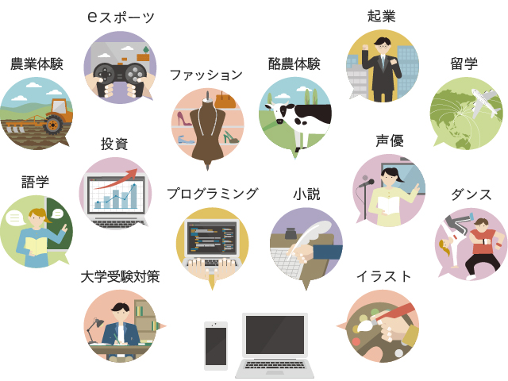

ネットの高校の教育方針
ネットの高校は主体的に行動できる人を育み続けます。机の上だけで学ぶ勉強だけでなく、自由な発想で考え主体性をもって問題に取り組む力となるのは総合力です。インターネットが社会に広がり、私たちの生活は大きく変わりました。世界中の情報が誰でも簡単に手に入ります。しかし、情報そのものだけでは価値は生まれず、その情報を元に自分なりに考え動ける人が価値を生み出せるのです。総合力を礎に個性という独自性が付加価値となります。ネットの高校では、総合力を身につけるために、教養・思考力・実践力の３つを学びます。

-
教養
自分なりの考えをもつための知識 -
実践力
考えを行動に移す力 -
思考力
知識を使って考える力
ネットの高校の特長
０１
好きなときに、好きな場所で学習
効率的に高卒資格を取得
ネットの高校は、インターネットと通信制高校の制度を活用した新しい高校です。ICTツールを活用し効率よく高校卒業資格取得のための学習ができます。効率よく学習することで、自らが学びたいことに多くの時間をあてられます。
必修授業について
０２
増えた時間でやりたいことを
将来へつながる多くの経験ができる
ネットの高校では、好きなことを好きなだけ学ぶことができます。ネットで学べる大学受験対策・プログラミング・語学などに加え、リアルで体験する職業体験・留学プログラムなどの課外授業や、eスポーツや投資・起業を学べる部活があります。
課外授業について ネット部活 ０３
ICTツールを活用
ネットでもリアルでも友だちができる
ICTツールを活用することで、日本全国・海外に住んでいる生徒同士がつながれます。コミュニケーションツールを使ったチャット形式のホームルーム・ネット運動会・ネット遠足などで友達が作れ、リアルで行われるスクーリング・文化祭・職業体験で友達に会うことができます。ネットの高校ではネットとリアル双方のコミュニケーションを学べます。
年間イベント ICTツールの活用
ネット
- コミュニケーションツール
- ネット部活
- ネット遠足
- ネット運動会
- VR空間
リアル
- スクーリング
- 文化祭（ニコニコ超会議）
- 職業体験
ほか多数
ネットの高校とは
- ネットの高校について
- ネット部活
- 生徒の活躍・アンケート
- 卒業生インタビュー
- 学校関係者・著名人メッセージ
- 動画一覧
- 年間イベント
- 進路実績（進学・就職）
- 生徒の声
- 保護者の想い
- 制服紹介
- 書籍紹介